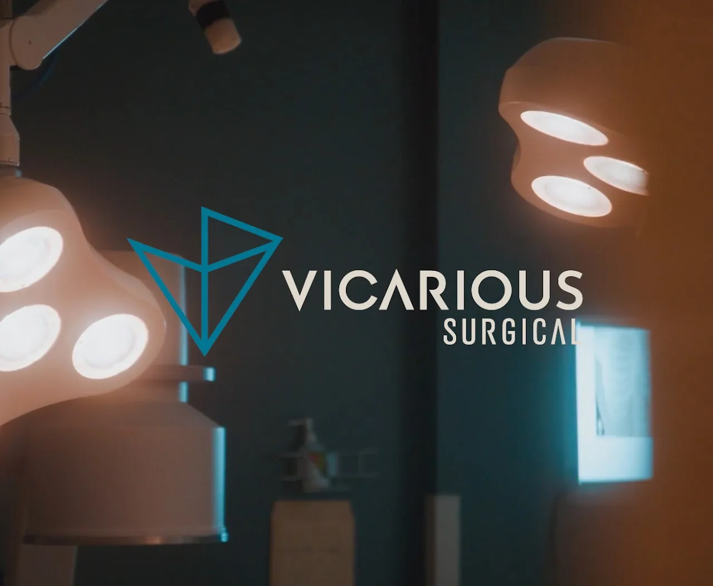

Context
In 2022, during my time as a video editor at Matter Communications, we had the opportunity to work with the nascent Vicarious Surgical on a company-wide marketing push on their way to a SPAC. It was all-hands-on-deck between the public relations and creative services teams, and I was originally tasked with editing the "About Us" and "Thought Leadership" videos.


Since we'd just come off our second season of the "On the Tech Trail" podcast series with the Massachusetts Technology Leadership Council, the audio-only avenue of the media landscape was top of mind. In fact, when drafting our questions for the C-suiters who'd be featured in the videos I mentioned, it was impossible to ignore the similarity between the two types of interviews. With so much likely to wind up on the cutting room floor anyway, I thought, why not just add in a few more deeply probing questions and incorporate the extra material into a podcast format to supplement all the other media?
We'd already interviewed several Boston-area tech leaders about remote/accessibility and telehealth tech, and there was a great deal of overlapping content to draw from.
Process

I took to Miro to plot out a rough content arc for a 3-part limited series where we could explore the history, current state, and future outlook of robotics through a wider lens, all while positioning Vicarious Surgical as thought leaders in the space. It's not my most aesthetically pleasing Miro product (unlike what I'd make for the ACLU) but it sold the idea and they signed on. This was in no small part due to the fact that for the C-suite stakeholders, their involvement was baked in and it required no additional work from them. It was just another way to legitimize their expertise among peers in the field.
Result
Fast forward several months of interviewing, scripting, and editing and we have "More Capable," a series which became a foundational example of Matter's fledgling podcast initiative which would result in several more contracts and a new hire. It was an exercise in viewing marketing deliverables as a larger ecosystem and leveraging the momentum of projects already in motion.